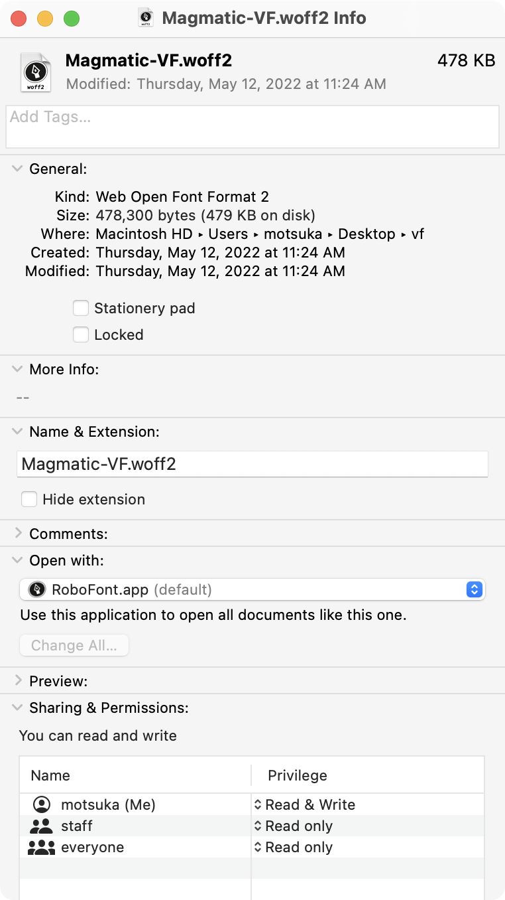
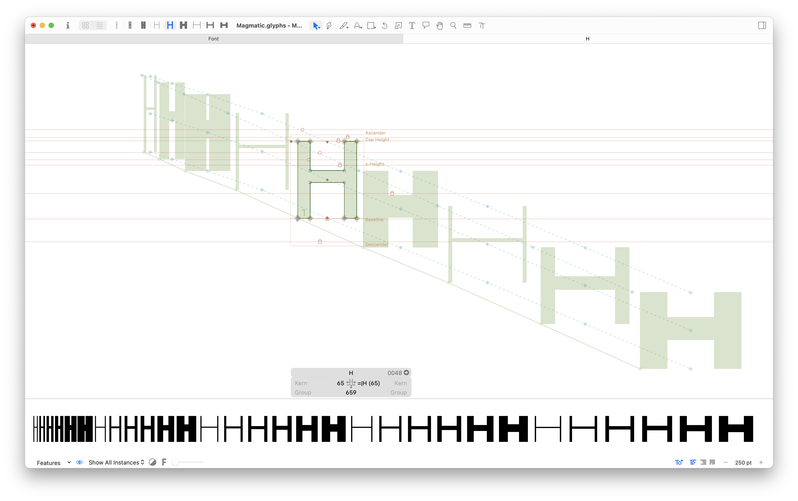
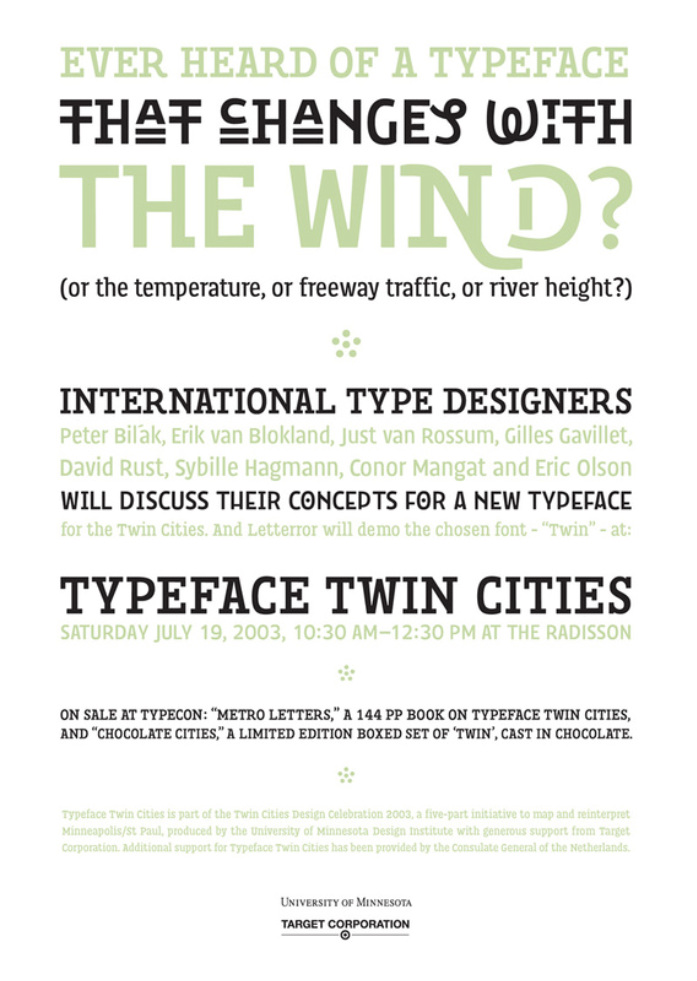

A variable font is a single font file contains many different variations of a typeface, instead of having a separate font file for every width, weight, or style. This format was developed in collaboration by Adobe, Apple, Google, and Microsoft.
The full family of Magmatic requires 30 filesWhich would require 30 HTTP requests, and a data load of 2.1MB to be downloaded

As a variable font, it is a single file request of 478KB (88% lighter)
Digital letterforms are made of mathematical equations, as functions of time
Masters vs. Instances Source

Master Compatibility view of outlines
H
H
H
→
H
←
H
H
H
Design space visualizer (Occupant Fonts)Instance positions within the design spaceLaurence Penney’s Samsa, Variable Font Inspector
Axis Tag
Description
Valid Range
wght
weight
1—1000
wdth
width
>0, percent of normal width
opsz
optical sizing
>0, point sizes
ital
italicization
0—1
slnt
slant
-90—90
Standard Axes for Open Type 1.8
Part 2: Axes of Variation
Typographic Flexibility
Device flexibility, navigation menu for Occupant Fonts SiteA customizable e-reader with variable weight axis SiteHarmonizing with other scripts and fontsSample uses of Start Script for Panera, by Victoria RushtonA variable “underline” glyph for pairing, with 2 stylistic alternatesAn optical size axis for various mediaRefined microinteractions, microsite for Stephen Nixon’s Recursive SiteGrades and optical sizing SiteCustom axes for Chee Variable by Ohno Type, James Edmonson SourceCustom stencil font for Rhode Island School of Design, by Ryan Bugden SourceSF Symphony Branding, by COLLINSSource
A Live Interface
Variable font formats provide not necessarily a new way to select a font style—a slider replacing a dropdown menu.
Rather, it is the ability to programmatically specify a precise point in a font’s design space.
Ink
Metal
Photo
Pixels
Vectors
Data as input material—variation as response
FF Beowulf by Letterror (Just van Rossum and Erik van Blokland,) 1990 Source

Announcement for a panel on the typeface Twin, Designed By Letterror, 2002
Variation as a function of any input
Type Phase, by Elias Hanzer SiteGoertek, a custom font for a sound company, Kontrapunkt SourceKachi Buwa Variable Font, by Emi Takahashi SiteWind Variable by Hansje van Halem SourceClimate Crisis Font, by Helsingin Sanomat SiteRadio Amnion, for Jol Thoms, with Minkyoung Kim SiteA moonphase variable fontSeasons in Pentameter by Laurel Schwulst SiteFont-weight mapped to the 72 microseasons of JapanTrekker/Browser by Tiger Dingsun SiteStudent Work from the class Web Type SiteChoreo by Dan Luo Site